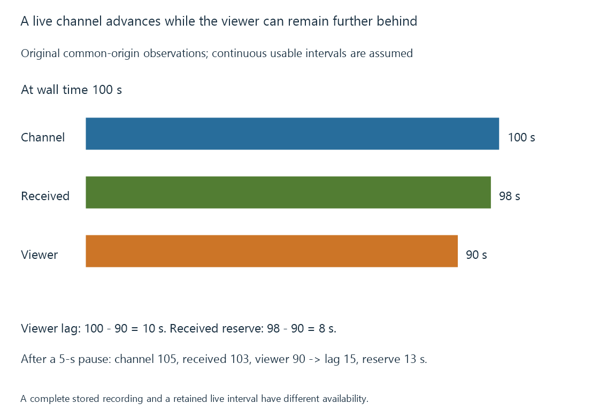

What is live TV?
Live TV presents a channel’s continuing programme timeline as new media arrives, with acquisition, delivery and buffering determining what a viewer can currently watch.
A live channel has a continuing programme timeline. New media becomes available as that timeline advances, rather than the player opening a complete movie whose entire duration is already stored.
The programme itself can be a live event, a prerecorded film or a scheduled repeat. “Live TV” describes the channel’s delivery and schedule relationship, not necessarily when its pictures were captured.
The viewer is behind several arrival points
An Emby route can acquire a channel from a tuner or compatible internet source, prepare its media for the selected client and retain some recent content for presentation.
Consider an original common-origin timing exercise:
| Observation at wall time 100 s | Programme position |
|---|---|
| Broadcaster’s current position | 100 s |
| Last usable position received by the server | 98 s |
| Position the viewer is presenting | 90 s |
The viewer is ten seconds behind the broadcaster. Two seconds belong to source arrival; another eight separate the received position from presentation.

If the viewer pauses for five seconds while acquisition continues, the declared received position can become 103 s while presentation remains at 90 s. The lag is now fifteen seconds, and the received reserve is thirteen.
The model assumes continuous usable intervals and a common time origin. Real timestamps can need mapping between broadcaster, receiver and presentation clocks.
A larger playback buffer can deliberately increase delay while protecting against short arrival variations. Two clients using different preparation and buffering routes can consequently show the same event at different moments.
Starting a channel requires a usable entry point
A source being selected is not the same event as the first picture becoming visible.
An RF route needs suitable tuning/demodulation, service information and the intended encoded components. A compressed-video decoder also needs enough initialization/reference information to begin reconstructing usable pictures.
A segmented internet route can wait for an appropriate playlist/segment boundary. The client then needs its own presentation reserve.
These stages explain why a channel can take time to start even when sustained delivery later keeps up. TV tuners develops acquisition; HLS develops one segmented delivery arrangement.
Channel media and guide descriptions are different inputs
A channel source supplies the media path and its identity. Guide data describes what is scheduled and when.
An attractive guide entry does not establish that the corresponding source can currently be acquired. A working stream can also exist with missing or mismatched programme descriptions.
Emby’s Live TV setup connects sources, guide data and channel mapping as separate parts of the supported route.
A recording changes what remains available
A stored recording can preserve an interval that has already passed. Its later playback need not stay near the advancing channel.
Pausing live presentation instead requires the earlier interval to remain accessible through an implemented buffer or recording arrangement. If the source provides only the newest content and no retained history, an arbitrary backward seek cannot recover an interval that was never kept.
The source timeline continues in both cases. What changes is the retained media the viewer can address.
See Also
- Over-the-air television
- IPTV and internet-delivered live channels
- TV tuners and service acquisition
- How a media server delivers playback